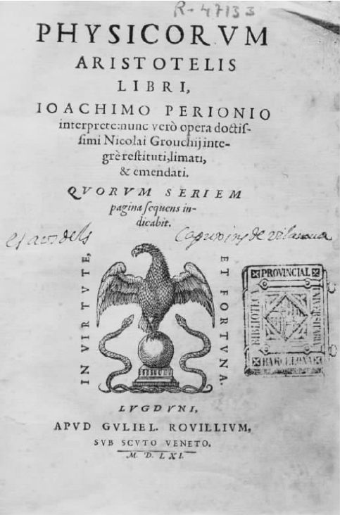

关于亚里士多德世界里作为主要实在的中等尺寸的质料物体，我们还能再概括地说些什么吗？它们最重要的特征之一是它们在变化。不像柏拉图的形式（Forms）那样永久、同一地存在着，亚里士多德的实在大部分都是短暂的物项，经历着各种各样的变化。在亚里士多德看来，共有四种变化：一个事物可在本体方面发生变化，可发生质变、量变以及地点方位的变化。在本体方面的变化就是该物的形成和不再存在，或者说是该物的产生和毁灭；这类变化的发生是在一只猫出生和死亡的时候，一座雕塑被竖立和被打碎的时候。质变又叫改变（alteration）：当植物在阳光照耀下变绿、在暗处变得苍白时就发生了改变，当蜡烛遇热变软、遇冷变硬时就发生了改变。量变就是增益和缩减；自然界事物就是诞生时开始增长、终结时逐渐萎缩。最后一种变化——地点方位上的变化就是运动。《物理学》的大部分内容就是对不同形式的变化进行的一项研究。因为《物理学》研究的是自然科学的哲学背景，并且“自然是运动和变化的一个原则”，因此“事物如果拥有这样一个原则就是具有自然性”。换言之，自然科学的主题就是运动和变化的事物。

图131561年里昂出版的《物理学》的扉页。“《物理学》的大部分内容就是对不同形式的变化进行的一项研究。因为《物理学》研究的是自然科学的哲学背景，并且‘自然是运动和变化的一个原则’。”
亚里士多德的先辈们被变化现象困扰着：赫拉克利特认为变化是永恒的、是现实世界最基本的特征；巴门尼德否认事物形成的可能性，因此也就否认有任何变化；柏拉图认为变化着的平常世界不能成为科学知识的主题。在《物理学》第一卷里，亚里士多德认为每次变化都涉及三样事物：变化发生的起始状态、变化朝向的状态以及经历变化的事物。在第五卷里，他又略微地进行了修正：“存在着引发变化的事物和正在发生变化的事物，还有变化发生于其间的事物（时间）；除此之外，还有变化发生的起始、终了状态。因为所有变化都是从某物到另一物，还因为变化中的事物与起始状态的事物是不同的，与终了状态的事物也是不同的——比如，原木、热、冷。”当一根原木在壁炉里变热，它就开始从冷的状态发生变化；变化到热的状态；原木本身经历了变化；变化经过了一些时间；存在某个事物——也许是我那点燃的火柴——引发了这种变化。
在每次变化中都有一个起始状态和一个终了状态，这一点是显而易见的；这两个状态必须是可区分的，否则变化就不会发生。（一个物体可由白变黑，然后又由黑变白。但是如果在某个特定时间内颜色一直相同，那么在那个时间段里颜色就没有发生变化。）同样，在质变、量变和地点方位变化中，很明显要有一个物项历经变化的始末。一方面，“除了变化的事物外没有变化发生”，或者说“所有的变化都是事物的变化”；另一方面，这种“事物”必须持续存在（把我的满杯倒空是一回事，而用另一个空杯子换掉我的满杯则是另一回事）。到现在为止，亚里士多德的分析一直顺利。但是，亚里士多德在分析实在（物质）的变化时似乎有些困难。
很容易想象到的是，产生和毁灭的两个极端就是非存在和存在状态。当苏格拉底降生时，他便由非存在状态变化到存在状态；当他死的时候则发生相反的变化。可是，仔细一想就会觉得这一想象有些荒谬，因为苏格拉底没有历经他的整个出生过程，也没有历经他的整个死亡过程。相反，这两次变化标志着苏格拉底存在的开始和终结。亚里士多德在这一点上的观点是，实在——质料物体——在某种意义上是合成的。比如，房屋是由砖和木材按照一定的结构组成的；雕塑是由雕刻成一定形状的大理石或铜构成的；动物是由组织（肉、血液等）按照某些特定原则构成的有机结构。所有实在都由两“部分”构成：材料和结构，亚里士多德习惯性地称之为“物质”和“形式”。物质和形式不是实在的物理组成部分，正如你无法把雕塑分割成两个独立的部分：铜和形状。另一方面，我们不能把物质看做实在的物理组成部分、把形式看做某种附加的非物理组成部分：一个足球的形状和它的皮革组织一样，都是其物理组成部分。相反，物质和形式都是实在的逻辑组成部分；换言之，在描述某个特定实在是什么时——比如描述一座雕塑是什么或一只章鱼是什么——需要同时提到它的构成材料和结构。
我们现在可以看出，“任何诞生的事物必然总是可分的，部分是这样的、部分是那样的——我指的是部分是物质、部分是形式”。并且：
当一座雕塑诞生或者说被制作出来时，一直存在的物体不是雕塑本身，而是制作雕塑的物质，即铜块或大理石石块。终极状态也不是非存在和存在，而是无定形的和定形的状态。当一个人诞生时，一直存在着的是原料，而不是人；而且这种物质先是非人状态，然后变成人的状态。
对变化性质的这般描述具有的优点是，可以让亚里士多德克服前人关于变化所提出的许多难题。但是这种克服还不能完全令人信服。托马斯·阿奎纳 [1] 这位对亚里士多德最为赞同的评论家认为，该理论排除了创造的可能性。阿奎纳的上帝凭空创造了世界。一旦世界形成，那么按照亚里士多德的观点，就是一个实质性的变化。但是这个变化并不是对一堆预先存在的物质强加一个新的形式：没有已存的物质，上帝创造世界时是一边设计结构一边制造了原料。阿奎纳说，如果仅仅对尘世间进行思考，你也许倾向于接受亚里士多德对变化的分析。但如果往天上看看，你就会明白不是所有的变化都符合这样的分析。不管是否同意阿奎纳的神学理论，我们也许都会接受其批评的精髓；因为我们不能仅凭逻辑方面的理由排除创造。不过，如果说亚里士多德对变化的描述过于狭隘，那么这个理论对他的科学理论来说影响还不算太大；因为该理论主要关注的是普通的、尘世的、变化的事物。
严格地说，我迄今所描述的并非亚里士多德对变化本身进行的阐述，而是对变化的前提条件的描述。不管怎样，他在《形而上学》第三卷里提出了“何谓变化？”的问题，并给出一个回答作为对第一卷里相关讨论的补充。他的回答是：“变化是有可能成为某物的潜能的实现。”［这句话常作为亚里士多德对运动的定义而被引用。英语“运动”（motion）通常的意思是“地点的变化”、“移动”。亚里士多德在这里使用的词是kinêsis：尽管该词有时仅限于表示移动，但一般来说它的常用义表示“变化”；在《形而上学》第三卷里，该词使用的就是常用义。］亚里士多德的批评家就曾将该句斥为言辞浮夸的故弄玄虚。对此有必要进行简要的评论。
术语“实现”和“潜能”在亚里士多德的专题论述中形成一个重复的主题。它们被用于区分实际上是某某人（物）的事物和潜在地是某某人（物）的事物；比如，可区分一个正在砖头上抹灰泥的建筑工人和一个休假的建筑工人（一个不在进行建筑操作，但保持有相关技术和能力的工人）。具有一种能力是一回事，运用那种能力则是另一回事；具有潜能是一回事，实现潜能则是另一回事。亚里士多德对实现和潜能之间的区别多次作出断言，有的很敏锐，有的则存在问题。比如，他认为“在所有情况下，实现都在定义上和实在上早于潜能；并且在时间上，实现在某种程度上早于、又在某种程度上迟于潜能”。第一点是正确的；因为，为了定义潜能我们必须详细指出潜能的指向，这样我们就是在陈述“实现”。（要成为一个建筑工就要具有建筑的本领；要成为看得见的事物就要具有被看见的能力。）既然反过来说是不正确的（实现不会以同样的方式预设潜能），实现就在定义上先于与之相关的潜能。可另一方面，实现在时间上早于潜能的说法就不那么令人信服了。亚里士多德的意思是，在任何潜在的某某人（物）之前必然存在真实的某某人（物）——存在潜在的人（即任何能变成人的原料）之前，就必然已经存在真实的人。因为，他说道：“在所有情况下，真实的某某人（物）是通过真实的某某人（物）的介质作用，才由潜在的某某人（物）变化而形成的——比如，人由人生，音乐爱好者则在其他音乐爱好者的帮助下形成。永远存在引发变化的事物，引发变化的事物本身就是现实存在的某某人（物）。”总的说来，任何变化都需要有一个诱因；并且总的说来，你使某件事物成为某某物是因为你将某个特征传递给了它，而且你只能传递你本身所具有的特征。因此，如果某人逐渐爱上了音乐，他必定是受某人或某物的影响而爱上音乐的。所以，真实的音乐爱好者必然存在，以便潜在的音乐爱好者能实现其潜能。亚里士多德的论述很精巧，但不是结论性的。首先，它没有表明现实事物早于潜在事物，只表明了现实事物早于潜能的实现。第二，它依赖的是不可靠的因果原理——比如，原因不必具有、通常也不具有传递性。
“变化是有可能成为某物的潜能的实现。”实现和潜能都指向哪里？答案出现在亚里士多德论证的过程中：是潜能在发生变化。我们因此可以用以下句子来替换亚里士多德那语义模糊的句子：“变化是具有可变性的事物实现其可变性。”既然在我们看来这可以解释某物发生变化的含义，接着就让我们把亚里士多德的抽象名词“变化”和“实现”换成浅显的动词：“当某物拥有一种变化的能力并发挥这种能力时，它就处于变化过程之中。”这样的释义无疑降低了亚里士多德分析的含糊晦涩；但似乎又付出了另一种代价——陈腐乏味。因为这样的分析成了同义反复的重言式 [2] 。
也许情况不是这样的。亚里士多德也许不想提供一个关于变化的启发性定义，而是想就变化中所涉及的某种实现关系发表特定的观点。亚里士多德认为，某些现实和与之相关的潜能是无法共存的。白色的物体不能再变白了。现实已经是白色的物体不会同时具有变白的潜能。在被刷成白色之前，天花板曾经具有变白的可能，但那时不是白色；现在，粉刷过了，它是白色的，却不再具有变白的潜能了。其他的现实则不同：现实已经是某某人（物）的情形可以与变成某某人（物）的可能性同时存在。当我抽烟斗时，我仍然具有抽烟斗的可能性（否则我就不能继续抽下去）。当一个障碍赛参赛者在赛道上飞奔时，他仍然具有飞奔的可能性（不然他就到达不了终点线）。亚里士多德对变化的“定义”，要点也许在于：变化是第二种意义上的实现。当苏格拉底皮肤被晒成褐色时，他依然有被晒成褐色的可能性（否则晒他的皮肤就不会有进展）；风信子在生长时，依然有生长的可能（否则它就会是一株可怜的、矮小的植物）。总的说来，当一个物体在变化时，它依然有变化的可能。
关于变化，亚里士多德还有很多要说。变化发生在时间和空间之内，《物理学》提供了许多关于时间、地点和真空之性质的复杂理论。因为空间和时间是无限可分的，亚里士多德就分析无限性这个概念。他还讨论了许多关于运动与时间之间关系的特殊问题，包括简要地分析了芝诺著名的运动悖论。
收录于《物理学》的不同文章都是现存亚里士多德作品中较为成熟的：尽管它们讨论的主题很棘手，尽管许多进行细致讨论的段落难以理解，它们的总体结构和要旨却总是十分清晰。《物理学》是开始阅读亚里士多德的最好切入点之一。